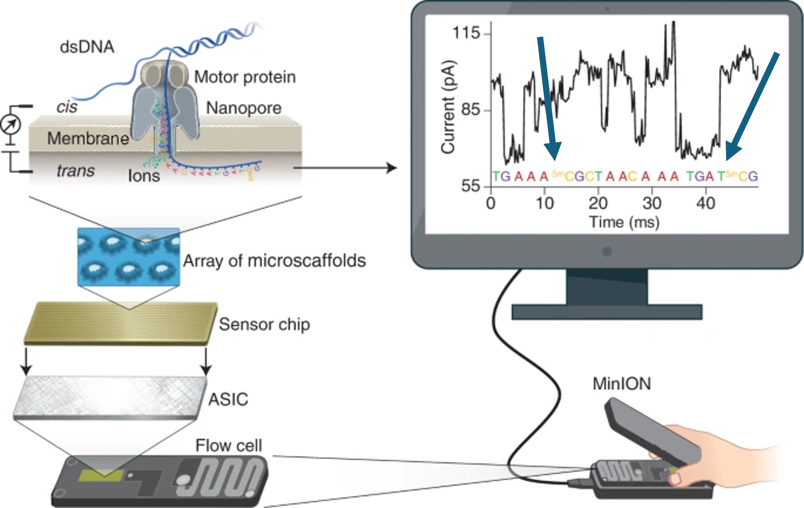
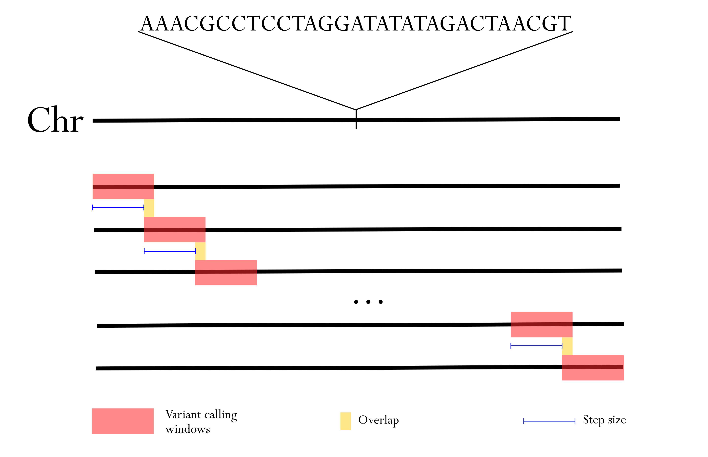

Sequenciamento de Terceira Geração com Oxford Nanopore
Bioinformática
2025-09-27
Bioinformática
- NIH: “Bioinformatics, as related to genetics and genomics, is a scientific subdiscipline that involves using computer technology to collect, store, analyze and disseminate biological data and information, such as DNA and amino acid sequences or annotations about those sequences.”
Bioinformática
- NIH: “Bioinformatics, as related to genetics and genomics, is a scientific subdiscipline that involves using computer technology to collect, store, analyze and disseminate biological data and information, such as DNA and amino acid sequences or annotations about those sequences.”
Oxford Nanopore
Principio do sequenciamento ONT
Oxford Nanopore
Fluxograma

Bioinformatics Pipeline
Basecalling
Procedimento no qual o sinal elétrico (
.pod5) é convertido em bases (.fastq|.bam);Momento crucial onde se define o perfil da análise que será realizada;
Erros aqui prejudicam todas as demais análises;
Dorado;
Basecalling - Dorado
- Contem diversos modelos:
- chamada de bases;
- modificação de bases;
- polimento;
- variantes;
Comando dorado
Qual modelo usar?
analyte: DNA ou RNA?pore: Qual técnologia de poro? (R10.4.1/R9.4.1)chemistry: Qual kit foi utilizado foi utilizado?speed: Velocidade de leitura durante o sequenciamento (DNA 400bps)version: Versão do modelo
Modelos dorado
Modelos dorado
FAST: Mais rápido e com menor acurácia;HAC: Alta acurácia;SUP: Super acurácia (maior requisito computacional);
Para escolher seu modelo.
Modelo SUP é uma vantagem em situações de construção de genomas de referência;
Para demais situações o HAC já é suficiente;
dorado basecaller
dorado basecaller
O padrão é salvar como
BAM;- Isso vai permitir salvar as modificações de base;
A performance ideal requer GPU;
- Usar a tag
--device "cuda:all";
- Usar a tag
Para gerar
fastqusar–emit-fastq;Para novos modelos é necessário utilizar
–emit-moves;É possível chamar e alinhar ao genoma de referência usando
--reference;
dorado basecaller
QC
FASTQCtambem funciona;NanoPack2é a atual melhor opção;NanoPlotpara visualização das estatísticas;Chopperpara trimagem (FASTQ);
NanoPlot
FASTQ ou BAM;
Qualidade (
Q);Tamanho (
L);N50;

NanoPlot

Exemplo de gráfico
Chopper
Samtools
- Filtrar o bam usando samtools (v1.17+):
Variantes

Diferentes softwares
GATK;
DeepVariant;
Freebayes;
clair3;
samtools + Picard;
Entre outros…
freebayes
Modelagem bayesiana;
Monta pequenos haplótipos;
Criado para short-reads;
Propenso a erros do tipo 1 (Falsos positivos);
Pode ser usado para uma ou várias amostras;
Comando freebayes
freebayes não é paralelizavel

freebayes não é paralelizavel
Parametros já testados:
Windows = 1000 bp;
Overlap = 50 bp;
Step size = 950 bp (1000 - 50);
Combinando todos os arquivos
Filtrando arquivos VCF
# remove variantes de qualidade menor que 1
bcftools view --exclude 'QUAL<1' variantes.vcf > variantes_filtradas.vcf
# remove alelos alternativos que não apareceram
bcftools view --trim-alt-alleles variantes_filtradas.vcf > variantes_filtradas_trim.vcf
# remove variantes que não tenham nenhum alelo alternativo nas amostras
bcftools view --min-ac 1 variantes_filtradas_trim.vcf > variantes_filtradas_trim_minac.vcf
# normaliza o vcf com base no genoma de referência
bcftools norm -f hg38.fa variantes_filtradas_trim_minac.vcf > variantes_filtradas_trim_minac_norm.vcfclair3
Desenhada para dados de diferentes plataformas;
- ONT, PacBio, Illumina;
Usa deep learning;
Modos
pileupefull aligment(mergecombinação);Roda uma amostra por vez;
--gvcf;
Comando clair3
- Usando
bioconda:
MODEL_NAME="[YOUR_MODEL_NAME]" # e.g. r1041_e82_400bps_sup_v500
THREADS=4
OUTPUT_DIR="ondesalvar"
run_clair3.sh \
--bam_fn=input.bam \ ## change your bam file name here
--ref_fn=ref.fa \ ## change your reference file name here
--threads=${THREADS} \ ## maximum threads to be used
--platform="ont" \ ## options: {ont,hifi,ilmn}
--model_path="${CONDA_PREFIX}/bin/models/${MODEL_NAME}" \
--output=${OUTPUT_DIR} \ ## output path prefix
--sample_name="nomedaamostra" \
--gvcf \
--bed_fn= "genes_disciplina.bed"Multi amostras
GLnexus;Modelo para usar [link];
Variantes estruturais (SV)

Programas
- Sniffles2;
- SVIM;
Sniffles2
- Permite análise de TRIOS (Pais e filhos), populações (multiplas amostras) e mosaico;
Faseamento

Programas
WhatsHap
Permite trabalhar com >1 amostra no vcf;
Não lida com variantes multialelicas;
Não lida com SVs;
Longphase
Permite apenas 1 amostra por vcf;
Suporta com SVs;
É capaz de utilizar a metilação para a fase;
Montagem de genomas
Shasta: algoritmo de grafo string, extremamente rápido;
Verkko: híbrido ONT+HiFi, qualidade superior;
Hifiasm: originalmente para HiFi, adaptado para ONT;
PECAT: versátil, realiza correção e polimento;
Programas
PECAT
Coleção de ferramentas;
minimap2;
clair3;
medaka;
PECAT
PECAT
Hifiasm
Desenhado para Hifi reads(PacBio), adaptado para ONT;
Gerar grafos;
Funciona para diploides;
Rápido;
Alinhando os ctgs ao genoma de referencia
Modificação de bases
Modbam
- O produto de chamada de base é chamado de modbam. Embora a extensão seja .bam;
- São adicionadas duas tags no bam contendo as informações de modificação: MM e ML;
- IGV;
Modkit
- Kit de ferramentas desenvolvida pela Oxford Nanopore Technologies;
Pipeline completo: desde BAM files até visualizações finais;
Interface command-line intuitiva e bem documentada;
Modkit
pileup: Agregação de probabilidades de modificação por posição genômica;DMR: Calculo de regiões diferencialmente metiladas;Entropy: medida de heterogeneidade de modificação em população celular;
Modkit - pileup
Gera um bedmethyl como resultado;
Pode ser para genoma completo o posições específicas;
Modkit - pileup por HP
- É possível analisar por haplótipo:
Modkit - DMR
Modkit - entropy
Modkit - extras
marcel.ferreira@unesp.br